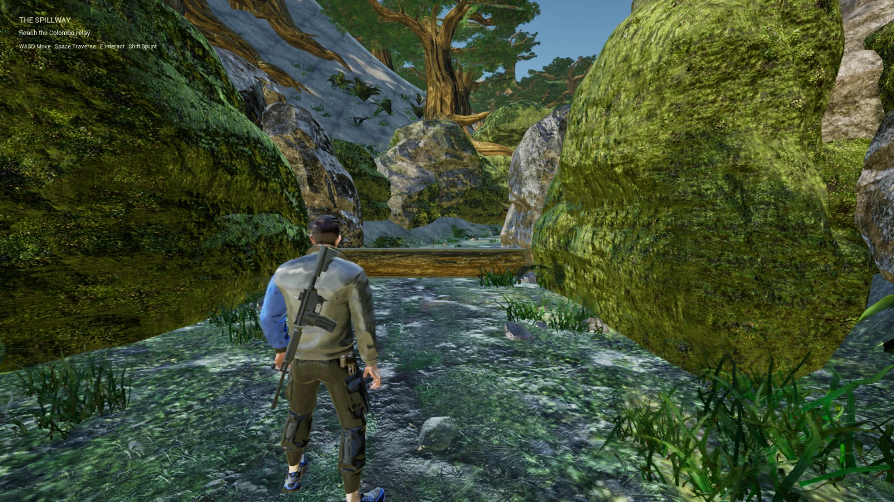

MEDIA / FIRST LOOKFrom the bunker to the boulevard
The first cinematic trailer takes a thirty-second journey through three places: an isolated bunker, the rocky paths of Jungle Gorge, and the streets of Colombo.
Read the full note ＋
Created in Unreal Engine Sequencer, the trailer uses the environments and assets already in the project. Cinematic copies keep the staging separate from the playable maps.
Follow the journey from a radio and a lantern to a familiar skyline. This footage presents the world of Serendib Still Breathes as it takes shape.
Watch the trailerDownload the MP4 ↓STUDIO 141 Development preview

DEVELOPMENT / ENVIRONMENTSInto the green: Jungle Gorge
Beyond the bunker, the island has a different rhythm. Moss-covered rock, tangled roots, and narrow passages form a route through the wild.
Read the full note ＋
Jungle Gorge connects the quiet beginning of the journey to the city ahead. The environment brings third-person exploration and traversal into a dense, overgrown landscape.
The gameplay captures in the gallery show the current playable environment, including the in-game HUD. They are a look at development in progress.
Explore the locations ↗STUDIO 141 Development preview

DEVELOPMENT / THE WORLDA city worth remembering
Colombo remains at the heart of Serendib Still Breathes: a post-apocalyptic setting with a distinctly Sri Lankan identity.
Read the full note ＋
The Lotus Tower rises above weathered buildings and empty streets. It is a familiar landmark in a changed city, and an anchor for the journey beyond the gorge.
Explore the city captures in the store gallery, or download the press kit for a collection of images and game information.
Download press kit ↓STUDIO 141 Development preview